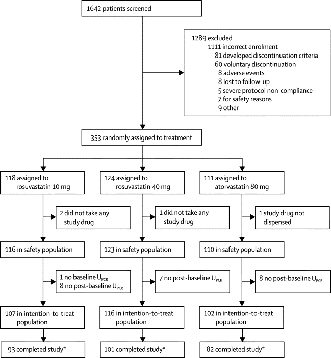
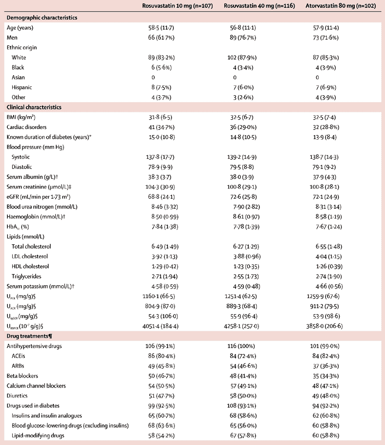
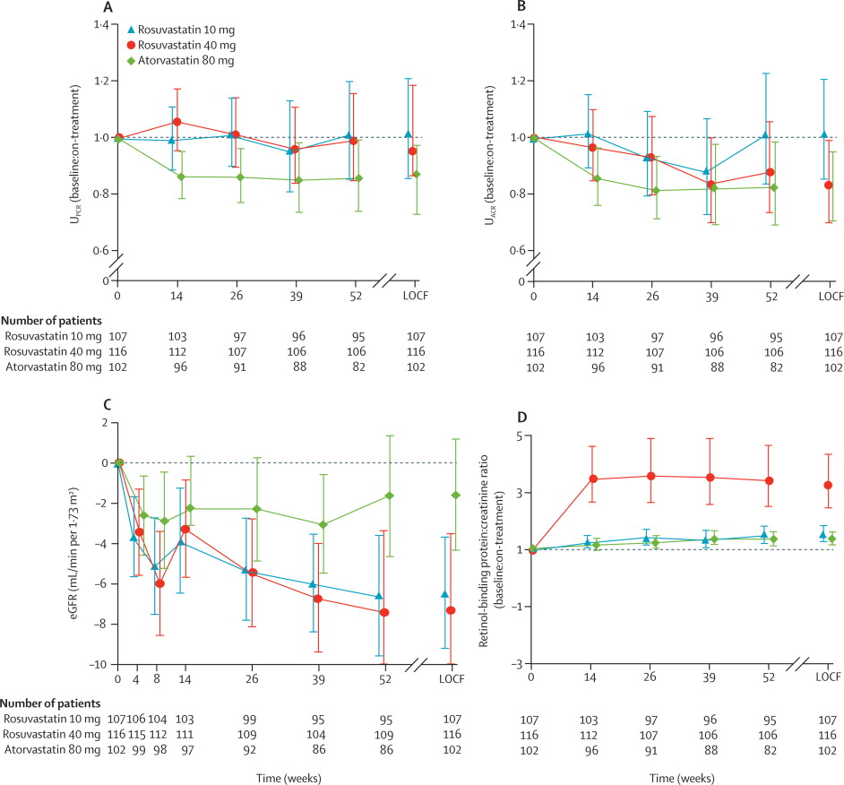
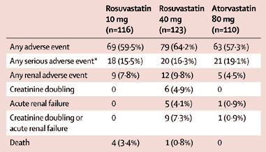

Introduction
The number of patients with declining renal function progressing to end-stage
renal disease is rising worldwide, particularly as a result of atherosclerosis and type 2
diabetes.1
Lifestyle and dietary changes can reduce the risk of adverse renal outcomes, as can
glucose-lowering and blood pressure-lowering drugs.2, 3, 4, 5, 6
Nevertheless, residual progressive renal function loss is high,7
and end-stage renal disease imposes enormous health and cost burdens on high-income
countries.8
Cholesterol is thought to be an important risk factor for loss of renal
function. Experimental studies have shown that cholesterol might have a role in renal
disease progression, and lowering cholesterol concentrations with statins has renoprotective
effects.9
However, in clinical studies, statins seem to have varying effects on renal function,10 and a
recent large study with a renal hard outcome failed to show that a combination of
simvastatin and ezetimibe had a renoprotective effect.11, 12 We did
the Prospective Evaluation of Proteinuria and Renal Function in Diabetic Patients with
Progressive Renal Disease (PLANET I) trial to assess the renal effects of two different
statins on patients with diabetes and proteinuria.
Methods
Study design and participants
We did this randomised, double-blind, parallel-group trial at 147 research
centres in Argentina, Brazil, Bulgaria, Canada, Denmark, France, Hungary, Italy, Mexico,
Romania, and the USA. During an 8-week lead-in period, patients with diabetes and
proteinuria were given dietary advice and underwent optimisation of existing hypertension
treatment and stopped taking statins (if applicable). Eligible patients were aged 18 years
or older and had type 1 or type 2 diabetes with proteinuria (urine protein:urine creatinine
[UPCR] 500—5000 mg/g), and fasting LDL cholesterol concentrations of 2·33 mmol/L
or more. Patients had to be receiving treatment with angiotensin-converting enzyme
inhibitors, angiotensin receptor blockers, or both for at least 3 months before the first
screening visit. 4 weeks before randomisation, blood pressure was rechecked and hypertension
treatment adjusted accordingly. At the last visit before randomisation, UPCR was
assessed for eligibility from first morning-void urine collected on 3 consecutive days.
Patients were excluded if their HbA1c was greater than 11%; they
had a history of statin intolerance, statin-induced myopathy, or serious hypersensitivity
reaction to other statins; or they had a history of homozygous familial
hypercholesterolaemia or known type 3 hyperlipoproteinaemia (familial
dysbetalipoproteinaemia). They were also excluded if they had used oral or intravenous
immunosuppressive drugs for treatment of proteinuria or renal disease or both within 3
months of the first screening visit, because immunosuppressive drugs might affect
proteinuria and confound its assessment. Additional exclusion criteria were current active
liver disease (alanine aminotransferase increased by more than twice the upper limit of
normal) or severe hepatic impairment; unexplained creatine kinase concentration more than
twice the upper limit of normal; an ischaemic cardiovascular event within the past 12 weeks;
moderate to severe congestive heart failure; hypothyroidism; Asian ethnic origin; severe
renal impairment (estimated glomerular filtration rate [eGFR] <40 mL/min per 1·73
m2 1 week before randomisation); underlying renal disease attributed to autosomal
dominant polycystic kidney disease; primary idiopathic interstitial nephritis; HIV
nephropathy; or ischaemic renal disease caused by bilateral renal artery stenosis or
unilateral renal artery stenosis in a single kidney. The appendix
contains a full list of inclusion and exclusion criteria.
This trial was done in accordance with the Declaration of Helsinki and Good
Clinical Practice guidelines. Ethics committees and institutional review boards approved the
research protocol. All patients gave written informed consent before starting. An
independent safety monitoring committee met periodically to review safety data.
Randomisation and masking
After the lead-in period, patients were randomly assigned to oral once-daily
rosuvastatin 10 mg, rosuvastatin 40 mg, or atorvastatin 80 mg for 52 weeks according to a
non-centre-specific randomisation scheme. The randomisation sequence was produced with
Global Randomisation System software (AstraZeneca) before inclusion of the first patient.
Patients and all study personnel (except the safety monitoring committee) were masked to
treatment allocation. All study drugs were in identical capsules, and supplied in identical
bottles labelled appropriately so as to maintain the allocation masking.
Procedures
During the first 4 weeks of treatment, patients assigned to receive
rosuvastatin 40 mg or atorvastatin 80 mg received a half-dose of study drug to assess
tolerability, and were then titrated to the full dose for the remaining 48 weeks.
After randomisation, patients collected first morning-void urine samples on 3
consecutive days at −1, 14, 26, 39, and 52 weeks for assessment of UPCR and urine
albumin:urine creatinine ratio (UACR). Samples were analysed separately for
protein and creatinine concentrations. Serum creatinine concentration was measured at −8,
−1, 4, 8, 14, 26, 39, and 52 weeks and used to calculate eGFR with the modified Modification
of Diet in Renal Disease equation:13
eGFR=186 × (serum creatinine, mg/dL)−1·154 × (age, years)−0·203 × (0·742
if female) × (1·210 if black). Fasting blood samples were taken to analyse lipids at −8
weeks and −1 week, at randomisation, and then at 14, 26, 39, and 52 weeks. LDL cholesterol
was measured by the Friedewald equation unless triglyceride concentration was more than 4·52
mmol/L, in which case a β-quantification measurement was used. Apolipoprotein (Apo) B and
ApoA1 were assessed at randomisation, 26 weeks, and 52 weeks. ApoB:ApoA1 ratio was also
calculated at these visits. All laboratory analyses, including first morning-void urines,
were done at central laboratories (by Covance, in Indianapolis, IN, USA, and Geneva,
Switzerland).
Safety was monitored at weeks 4, 8, 14, 26, 39, and 52 by assessing adverse
events and laboratory data. Reported adverse events were recorded during the trial and
analysed with a standard coding dictionary (MedDRA, version 12.0) to
classify adverse event terms. Serious adverse events were defined as any adverse event that
resulted in death, was immediately life threatening, required hospital admission, resulted
in persistent or significant disability or incapacity, was a birth defect, or was an
important event that might have jeopardised the patient or might have required intervention
to prevent any of the above.
Outcomes
The primary endpoint was within-group change from baseline to week 52 or last
on-treatment observation carried forward in UPCR. Secondary endpoints were
within-group changes from baseline in UPCR at 26 weeks, and in UACR,
lipid profile, and eGFR at 26 weeks and 52 weeks. Exploratory endpoints included changes of
urine IgG and urine retinol-binding protein at 26 weeks and 52 weeks, changes of secondary
endpoint parameters at other times, and a comparison between the statins for the endpoints.
Statistical analysis
Sample size was based on the primary outcome in each treatment group. We used
a two-sided significance level of 5% to test for a positive effect versus baseline. We used
a coefficient of variation of 75% as a conservative estimate of variability. Assuming a
treatment ratio (UPCR on-treatment:UPCR at baseline) of 0·80 (a 20%
reduction) and a coefficient of variation of 75%, roughly 97 evaluable patients per group
were needed to show an effect with 90% power. The study was not powered to assess
between-group comparisons; these analyses were prespecified as exploratory.
The intention-to-treat population consisted of all patients with a baseline
measure and at least one post-baseline measure for the primary efficacy variable who had
taken at least one dose of study drug. We assessed urine proteins by calculating the
geometric mean concentration from the three first morning voids at each evaluation
timepoint. We determined baseline values from readings taken at the third visit (week −1).
The data were log transformed.
We assessed the primary outcome with a paired t test, done separately
for each treatment group. We exponentiated results and present them as a mean ratio
(on-treatment:baseline). We did similar analyses at other times for UPCR, UACR,
and untransformed eGFR data.
We did prespecified exploratory analyses with ANCOVA and mixed-effects
repeated-measure analyses that included treatment, region, and baseline value as a
covariate. We did not adjust for multiplicity.
We present descriptive statistics for percentage changes of lipids and
lipoproteins from baseline to week 52 (or last observation carried forward) for each
treatment group, for which baseline values were the mean value of the available readings
from week −1 and week 0 (for lipids), or the reading from week 0 (for ApoB and ApoA1). As
prespecified in the statistical analysis plan, we used ANOVA to compare percentage changes
in each lipid and lipoprotein parameter in the rosuvastatin 40 mg and atorvastatin 80 mg
groups. We included factors for treatment and region in the model. Adjusted means were
weighted by region.
We analysed safety in all patients who received at least one dose of study
drug. We present data for all reported adverse events, including those affecting the
kidneys, irrespective of the investigator's assessment of causality. Statistical tests for
differences in adverse events between treatment groups were not prespecified.
We did several post-hoc (not prespecified) analyses after unmasking of study
data. To assess the potential effect on eGFR of drug-induced altered renal tubular handling
of creatinine, we analysed change in eGFR based on cystatin C14
with frozen plasma samples (done in a similar manner to the analysis of eGFR based on
creatinine). We also tested between-group differences in UPCR. With the present
findings for the variability in proteinuria, we calculated post-hoc that 384 patients (128
patients per treatment group) would provide 80% power to detect a 20% difference between the
atorvastatin and rosuvastatin groups, assuming an SD for log-transformed proteinuria of 0·7
and a type I error rate of 0·05.
To assess between-group differences in the renal effects of the two statins
with enough power, we combined (post-hoc) the data from PLANET I with the data from PLANET
II, a similar trial of patients with proteinuria but without diabetes. The appendix
describes the design and methods of PLANET II. The two trials combined had 545 patients
(intention to treat), thereby providing more than 90% power to detect a 20% difference in
proteinuria between treatment groups. We did the statistical analyses with SAS (version
8.2). All statistical tests were two-sided, with a significance level of 5%.
The studies are registered with ClinicalTrials.gov
(PLANET I, number NCT00296374;
PLANET II, number NCT00296400).
Role of the funding source
The study was overseen by a steering committee, including non-voting members
from the sponsor. The steering committee oversaw the design of the study, the conduct of the
trial, and the management and analysis of all data. The sponsor was involved in the design
of the study, in the collection and analysis of data, and in writing the report. All authors
had access to all the data. The lead author and the steering committee had the final
decision to submit for the publication.
Results
We did PLANET I from Feb 8, 2006, to March 3, 2009. We screened 1642 patients,
of whom we enrolled 353. 118 patients were assigned to rosuvastatin 10 mg, 124 to
rosuvastatin 40 mg, and 111 to atorvastatin 80 mg. 325 patients constituted the
intention-to-treat population (figure 1); 47 patients
(14·5%) had type 1 diabetes and 278 (85·5%) had type 2 diabetes. Baseline demographic,
clinical, and biochemical characteristics and concomitant treatments were balanced between
treatment groups (table
1; the appendix shows patient details for PLANET
II). A greater proportion of patients in the intention-to-treat population had type 1
diabetes in the rosuvastatin 40 mg group (23 of 116; 19·8%) than in the rosuvastatin 10 mg
group (15 of 107; 14·0%) or the atorvastatin 80 mg group (nine of 102; 8·8%).

Figure 1 Trial profile for PLANET I
UPCR=urine protein:urine creatinine ratio. *The main reasons for discontinuing treatment before the end of the study were adverse events, voluntary discontinuation, incorrect enrolment, loss to follow-up, and severe protocol non-compliance.
Table 1
Baseline characteristics of participants in PLANET I

Data are mean (SD) or n (%) unless stated otherwise.
ACEis=angiotensin-converting enzyme inhibitors. ARBs=angiotensin receptor blockers.
eGFR=estimated glomerular filtration rate. UACR=urine albumin:urine
creatinine ratio. UIgGCR=urine immunoglobulin G:urine creatinine ratio.
UPCR=urine protein:urine creatinine ratio. URBPCR=urine
retinol-binding protein:urine creatinine ratio. Data are for intention-to-treat
population unless otherwise indicated.
UPCR was significantly lower at 52 weeks than at baseline for the
atorvastatin 80 mg group (p=0·033), whereas there was no difference from baseline in the
rosuvastatin 10 mg group (p=0·83) or the rosuvastatin 40 mg group (p=0·53) (table
2).
Table 2
Primary and selected secondary outcomes for PLANET I and for PLANET II, and exploratory post-hoc outcomes for PLANET I and II combined

Data are mean (95% CI). eGFR=estimated glomerular filtration rate. UPCR=urine
protein:urine creatinine ratio. LOCF=last observation carried forward.
UPCR was also significantly lower at weeks 14, 26, and 39 compared
with baseline in the atorvastatin 80 mg group, but was not significantly different for the
rosuvastatin 10 mg and rosuvastatin 40 mg groups (figure 2A).
UACR was significantly lower at week 52 (last observation carried forward) than
at baseline in the atorvastatin 80 mg group (week 52:baseline 0·82, 95% CI 0·71—0·95;
p=0·011) and at all other timepoints (figure 2B).
UACR was also significantly lower at week 52 in the rosuvastatin 40 mg group
(week 52:baseline 0·84, 95% CI 0·70—0·99; p=0·041). We found no significant changes in
UACR in the rosuvastatin 10 mg group (figure 2B).
Mean eGFR at 52 weeks was not significantly different from baseline in the atorvastatin 80
mg group, whereas it fell significantly in the rosuvastatin 10 mg and 40 mg groups (table 2, figure
2C).

Figure 2 Primary, secondary, and predefined exploratory renal endpoints of PLANET I
Data are mean baseline:on-treatment ratios. Error bars are 95% CIs. LOCF marks 52-week data accounting for all patients in the intention-to-treat population. The panels show UPCR (A), UACR (B), eGFR (C), and urine retinol-binding protein:urine creatinine ratio (D). UPCR=urine protein:urine creatinine ratio. UACR=urine albumin:urine creatinine ratio. eGFR=estimated glomerular filtration rate. LOCF=last observation carried forward.
Comparing the renal effects of atorvastatin and rosuvastatin showed that the
change of UPCR was not significantly different between the atorvastatin 80 mg
group versus the rosuvastatin 10 mg group or between the atorvastatin 80 mg group versus the
rosuvastatin 40 mg group (table 2). eGFR fell significantly
more in the rosuvastatin 40 mg group than in the atorvastatin 80 mg group (table
2). The results of PLANET II were similar to those of PLANET I (table
2), allowing us to pool the data. When the data were combined, we detected a
significant difference between the atorvastatin 80 mg group and the rosuvastatin 10 mg and
40 mg groups for change of UPCR. The reduction in eGFR was significantly greater
in the rosuvastatin 40 mg group than in the atorvastatin 80 mg group (table
2).
In PLANET I, all treatment groups had a significant change from baseline for
total cholesterol, LDL cholesterol, triglycerides, and ApoB:ApoA1 ratio (table
3). The reduction in LDL cholesterol with rosuvastatin 40 mg compared with
atorvastatin 80 mg was significantly different (p=0·030), as was the reduction of LDL
cholesterol:HDL cholesterol ratio (p=0·031). ApoA1 was reduced significantly more with
atorvastatin 80 mg than with rosuvastatin 40 mg (p=0·016). Blood pressure did not change
significantly between baseline and 52 weeks in any treatment group (table
3).
Table 3
Changes in lipids and blood pressure comparing baseline and week 52 in PLANET I

Data are mean (SD). Lipid analyses are last observation carried
forward.
To explore the effect of changes in proteinuria and albuminuria on glomerular
or tubular character, we measured urinary excretion of the glomerular marker IgG and tubular
marker retinol-binding protein and calculated urine IgG:creatinine and urine retinol-binding
protein:creatinine ratios. The week 52:baseline ratio for IgG was 1·03 (95% CI 0·88—1·19;
p=0·74) for the atorvastatin 80 mg group, 1·07 (0·90—1·27; p=0·42) for the rosuvastatin 10
mg group, and 1·18 (0·99—1·41; p=0·058) for the rosuvastatin 40 mg group. We recorded a
large increase in urine retinol-binding protein:creatinine ratio in the rosuvastatin 40 mg
group (more than in the atorvastatin 80 mg group and the rosuvastatin 10 mg group; figure
2D).
In another post-hoc analysis, to exclude bias in the interpretation of the
eGFR data by an initial haemodynamic effect of treatment, we assessed eGFR changes at 52
weeks using week 14 as baseline (thus, excluding initial effects). eGFR was stable with
atorvastatin 80 mg (0·52 mL/min per 1·73 m2, 95% CI −2·42 to 3·45; p=0·73) and
rosuvastatin 10 mg (−2·49, −5·21 to 0·24; p=0·073) and decreased significantly with
rosuvastatin 40 mg (−3·96, −7·47 to −0·25; p=0·036).
In an additional post-hoc analysis of the potential effect on eGFR of
drug-induced altered renal tubular handling of creatinine, we tested concentrations of
cystatin C in frozen plasma samples. eGFR based on cystatin C changed to a similar degree
from baseline to week 52 as did eGFR based on creatinine: −0·9 mL/min per 1·73 m2
(95% CI −5·7 to 3·8; p=0·69) in the atorvastatin 80 mg group, −4·3 (−11·7 to 3·1; p=0·25) in
the rosuvastatin 10 mg group, and −9·5 (−16·0 to −3·0; p=0·0045) in the rosuvastatin 40 mg
group. The difference between atorvastatin 80 mg and rosuvastatin 40 mg was 8·1 (−1·0 to
17·1; p=0·081).
All study drugs were generally well tolerated (table
4). Adverse events were consistent with the age and underlying medical conditions of the
patient population and the safety profile of statins. Five patients died (four in the
rosuvastatin 10 mg group, one in the rosuvastatin 40 mg group). No deaths were considered to
be of renal cause.
Table 4
Adverse events in the safety population (PLANET I)

Serious adverse events occurred in similar proportions in each group: 21
(19·1%) of 110 patients in the atorvastatin 80 mg group, 18 (15·5%) of 116 in the
rosuvastatin 10 mg group, and 20 (16·3%) of 123 in the rosuvastatin 40 mg group. One serious
adverse event (two episodes of cardiac failure in the rosuvastatin 10 mg group) was deemed
related to study drug. Renal adverse events were reported by five (4·5%) patients in the
atorvastatin 80 mg group, nine (7·8%) patients in the rosuvastatin 10 mg group, and 12
(9·8%) patients in the rosuvastatin 40 mg group. Acute renal failure was reported for one
patient in the atorvastatin 80 mg group, no patients in the rosuvastatin 10 mg group, and
five patients in the rosuvastatin 40 mg group. None of the acute renal failure events were
considered by the investigators to be related to study drug. Doubling of serum creatinine
from baseline at any time during treatment occurred in six patients in the rosuvastatin 40
mg group. For five of these six patients, alternative explanations to statin treatment
explained the increases in serum creatinine. Serum creatinine decreased once study drug was
discontinued in four of the six patients. In the remaining two patients, final serum
creatinine concentrations were 115 μmol/L and 97 μmol/L. In two of the six patients, serum
creatinine decreased despite study drug continuation. Serum creatinine did not double in
patients in the other two groups.
Discussion
The PLANET I study showed that urinary protein excretion was reduced during 1
year of treatment with atorvastatin 80 mg, with no significant changes in eGFR in patients
with diabetes and proteinuria. In patients given rosuvastatin 40 mg, urinary protein
excretion was not significantly different from baseline, but the patients did have a
significant decrease from baseline in eGFR, and doubling of serum creatinine and acute renal
failure were more common in this group. Although the study was not powered for a direct
comparison between the two statins, results of both PLANET I and II suggest that
atorvastatin and rosuvastatin have different renal profiles in patients with proteinuria,
whereas the effects on lipids are similar, with a larger effect of rosuvastatin 40 mg than
of atorvastatin 80 mg.
Although lowering LDL cholesterol with statins can reduce the risk of
cardiovascular morbidity and mortality in high-risk populations, including those with renal
disease,11, 12
the published work concerning renal effects of statins is limited and often confusing, with
the effect of statins on proteinuria seeming to be variable—some studies showed no effect10 and
others showed reduced proteinuria.15 No
studies have been done with a predefined endpoint, such as decreased eGFR, and results of
post-hoc analyses are conflicting.
In a meta-analysis of 23 trials of 29 147 participants, Savarese and
colleagues16
concluded that atorvastatin and rosuvastatin have similar effects on eGFR, whereas new-onset
proteinuria occurred significantly more often with the 40 mg dose of rosuvastatin than with
lower doses. This finding contrasts with a post-hoc analysis17
and a review18 comparing atorvastatin
and rosuvastatin, which concluded that atorvastatin has beneficial renal effects compared
with rosuvastatin. The first large trial that studied a renal hard outcome as a secondary
objective showed that simvastatin combined with ezetimibe had no significant effect on the
composite outcome of doubling of serum creatinine and end-stage renal disease, compared with
placebo.11, 12
One crucial question emanating from the results of these studies and the PLANET studies is
whether different statins have different effects on progression of loss of renal function
(and whether any variable effects on renal function are related or unrelated to their
effects on lipids). Unfortunately, no trials with hard outcomes have been done that directly
compare renal effects of two statins in these patient populations.
The PLANET studies assessed two different statins. However, comparison between
the statins was exploratory because the studies were designed and powered to estimate
within-group effects. Thus, these comparisons between atorvastatin and rosuvastatin, or
between the two rosuvastatin doses, should be interpreted with caution. The two statins
should be compared in a predefined, adequately powered study before any firm conclusions can
be drawn about difference in renal effects of the two statins.
However, if our findings do indicate a true difference between the statins,
the question remains: is atorvastatin renoprotective and rosuvastatin neutral, is
atorvastatin neutral and rosuvastatin harmful, or is atorvastatin protective and
rosuvastatin harmful? Because we did not include a placebo control in the present study, no
definitive conclusions can be drawn in this regard. The change of eGFR in the atorvastatin
80 mg group was small in patients with diabetes, which could suggest a protective effect of
atorvastatin. What evidence is available in the published work that atorvastatin is
renoprotective? In the TNT trial, atorvastatin 80 mg was reported to improve eGFR over a
5-year period in patients with coronary heart disease and renal insufficiency (15% with
diabetes), compared with a 10 mg dose.19
Additionally, the Collaborative Atorvastatin Diabetes Study20
showed that atorvastatin 10 mg slows eGFR change compared with placebo for patients with
type 2 diabetes and proteinuria.
With respect to whether rosuvastatin could harm the kidney, its early
registration history (placebo-controlled and fixed-dose comparator trials21, 22) showed
that transient dipstick-positive proteinuria was more common, particularly in patients
treated with an 80 mg dose, which is higher than the approved maximum dose of 40 mg.
Proteinuria seemed to be primarily caused by inhibition of tubular reabsorption of filtered
proteins, including low-molecular-weight proteins such as retinol-binding protein.23 This
tubular-derived proteinuria was thought to be a general statin-induced functional effect.
Follow-up data support the opposite conclusion, that rosuvastatin is not harmful to the
kidneys. Several large patient cohorts have been exposed to rosuvastatin at different doses
during long-term treatment. Despite rigorous safety monitoring, no signs of any renal harm
have been detected (unpublished data from AstraZeneca).22, 24, 25
In the JUPITER trial,26 no renal harm
was observed with rosuvastatin treatment for patients with moderate chronic kidney disease
and increased high-sensitivity C-reactive protein. Some findings from the PLANET studies
might also suggest that rosuvastatin is renally harmful, at least in patients with
proteinuria. The reductions in eGFR tended to be greater in patients treated with
rosuvastatin 40 mg than in those treated with rosuvastatin 10 mg. Additionally, the
retinol-binding protein data suggest that the higher dose of rosuvastatin has tubular renal
effects that exceed those of atorvastatin 80 mg and rosuvastatin 10 mg. Although the exact
meaning of increased urinary retinol-binding protein is unknown, increased concentrations of
low-molecular-weight proteins, such as retinol-binding protein, β2-microglobulin, and
α1-microglobulin, could be considered markers of tubular damage.27
A study of patients with type 2 diabetes comparing atorvastatin and rosuvastatin showed no
difference in albumin excretion at 16 weeks. However, the study included normoalbuminuric
and microalbuminuric patients.28
As noted earlier, inclusion of a placebo group in our trials would have helped
us to assess whether these two statins protect or harm the kidney. However, a placebo group
was deemed unethical: the ethics committees questioned whether withholding statin treatment
from patients with nephropathy was justified. Thus, such trials will probably never be done.
This situation is particularly unfortunate because such a trial with hard outcomes is needed
to verify whether or not there is a difference between statins (panel).
Panel
Systematic review
Before the start of the study in 2006, we searched PubMed for clinical
trials published in English, with the keywords “albuminuria” or “proteinuria,”
“rosuvastatin” and “atorvastatin”, and “diabetes”. We identified one study27 of albuminuria and
estimated glomerular filtration rate in 344 patients, of whom 293 had normal
albuminuria excretion. The results showed no changes in either albuminuria or
estimated glomerular filtration rate during 16 weeks of treatment with either
rosuvastatin or atorvastatin. We found no randomised trials done in patient
subgroups with higher levels of proteinuria. Using the same search strategy in
November, 2014, we found two other articles, neither of which reported renal
outcomes.
Interpretation
In PLANET I, we studied the effect of 1 year of treatment with two
commonly used statins—atorvastatin and rosuvastatin—on proteinuria and estimated
glomerular filtration rate in patients with diabetes and nephropathy. To our
knowledge, this study is the first that compares two statins in this high-risk
population. We showed a fall in proteinuria with atorvastatin 80 mg associated with
a stable estimated glomerular filtration rate, whereas rosuvastatin 40 mg had no
effect on proteinuria and decreased estimated glomerular filtration rate over the 1
year of follow-up. Although our study was not powered for between-group comparisons,
our findings suggest that despite high-dose rosuvastatin lowering lipid
concentrations to a greater extent than high-dose atorvastatin, atorvastatin seems
to have more renoprotective effects for this population. The study design prevents
us unequivocally stating that some statins might harm the kidney. However, these
data, and data from the SHARP trial11, 12
(showing no renal protective effect of simvastatin and ezetimibe), warrant further
clinical studies directly comparing atorvastatin and rosuvastatin, and possibly
other statins, particularly in high renal risk groups. Statins seem to be effective
in protecting many patients against cardiovascular events, but whether this benefit
occurs at the expense of the kidneys needs to be established.
There are further limitations of the PLANET studies. The analysis of the
primary outcome involved uncontrolled comparisons with baseline, which are subject to
confounding with factors correlated with time, particularly the natural progression of
disease. We used surrogate markers rather than hard clinical outcomes for our primary and
secondary analyses (although in the safety analysis, the non-adjudicated,
investigator-reported hard renal outcome of renal failure was more common in the
rosuvastatin 40 mg, whereas death was more common in the rosuvastatin 10 mg group). The
Modification of Diet in Renal Disease equation for eGFR has not been validated for patients
with mildly or moderately diminished renal function (most patients in the PLANET studies),
nor did we use a more accurate measure such as measured GFR.29
Finally, we did several statistical tests, with no adjustment for multiple comparisons.
The PLANET studies are among the first to investigate the effects of two
different statins on renal outcomes, offering a start to understanding the potential
heterogeneity of the effects of statins on the kidney. We recommend future studies with
sufficiently large groups of patients with proteinuria to directly compare the effects of
different statins on both renal surrogate markers, such as proteinuria, and hard-outcome
markers, such as end-stage renal disease.
Contributors
JRS and DdZ designed PLANET I. GR and DdZ designed PLANET II. DAA and MDC ran
the study with their teams. VAC, JTM, and HJLH did the data and statistical analyses. All
authors interpreted data. DdZ wrote the draft of the report, and all authors contributed to
its revision. DdZ takes responsibility for the full report. The appendix
lists the steering committee, safety committee, and investigators of PLANET I and II.
Declaration of interests
DdZ is a consultant for and has received honoraria (paid to employer) from
AbbVie, Astellas, AstraZeneca, Bristol-Myers Squibb, Chemocentryx, Janssen Pharmaceuticals,
Hemocue, Merck Sharp & Dohme, Merck AG, Novartis, Reata, Takeda, and Vitae. He has
received a research grant (given to institution) from Merck AG. HJLH is consultant for and
received honoraria (paid to employer) from AbbVie, Astellas, Janssen Pharmaceuticals, Reata,
and Vitae. BAM is a consultant for and has received honoraria and grant funding from Abbott,
Quark Pharmaceuticals, Eli Lilly, AstraZeneca, Thrasos, ISIS Pharmaceuticals, Pfizer, and
Biogen. He has also received grant funding from the National Institutes of Health and the US
Department of Veterans Affairs. H-HP has equity in Merck and Novo Nordisk and has received
consulting and lecture fees from AstraZeneca, Abbott, Novartis, and Reata. GR is a
consultant for AbbVie, Alexion Pharmaceuticals, Bayer Healthcare, Reata Pharmaceuticals,
Novartis Pharma, AstraZeneca, Otsuka Pharmaceuticals Europe, and Concert Pharmaceuticals.
JRS is a consultant for Merck. DAA is an employee of and stockholder in AstraZeneca and owns
stock in Pfizer and Bristol-Myers Squibb. VAC and JTM are employees of AstraZeneca. MDC is a
former employee of AstraZeneca.
Acknowledgments
Before final submission of this report our friend and colleague Donald G Vidt
passed away on April 17, 2013. Don was an essential person in our steering committee; not
only because of his vast knowledge of the scientific topic at hand, but also because of his
personal contribution in bringing the necessary balance to the interactions within our
group. We miss him. We thank all the local study coordinators and patients for their
valuable contribution. This study was funded by AstraZeneca. Editorial support was provided
by Gregg Truitt and Karen McFadden of AstraZeneca and by Valerie Moss of Prime Medica,
funded by AstraZeneca.
Supplementary Material
Supplementary audio
Dick de Zeeuw discusses a trial looking at the effect of statins on
renal function.
©
2015 Elsevier Ltd. All rights reserved.
S2213-8587(14)70246-3 - see front matter
DOI:
10.1016/S2213-8587(14)70246-3
 ,
Deborah A Anzalone, MD b, Valerie A Cain, MS b, Michael D
Cressman, DO c, Hiddo J Lambers Heerspink, PhD a, Prof Bruce A
Molitoris, MD d, John T Monyak, PhD b, Prof Hans-Henrik Parving,
MD e f, Prof Giuseppe Remuzzi, MD g, Prof James R
Sowers, MD h, Donald G Vidt, MD i †
,
Deborah A Anzalone, MD b, Valerie A Cain, MS b, Michael D
Cressman, DO c, Hiddo J Lambers Heerspink, PhD a, Prof Bruce A
Molitoris, MD d, John T Monyak, PhD b, Prof Hans-Henrik Parving,
MD e f, Prof Giuseppe Remuzzi, MD g, Prof James R
Sowers, MD h, Donald G Vidt, MD i †{kind=link}
{kind=link}
{kind=link}
{kind=link}